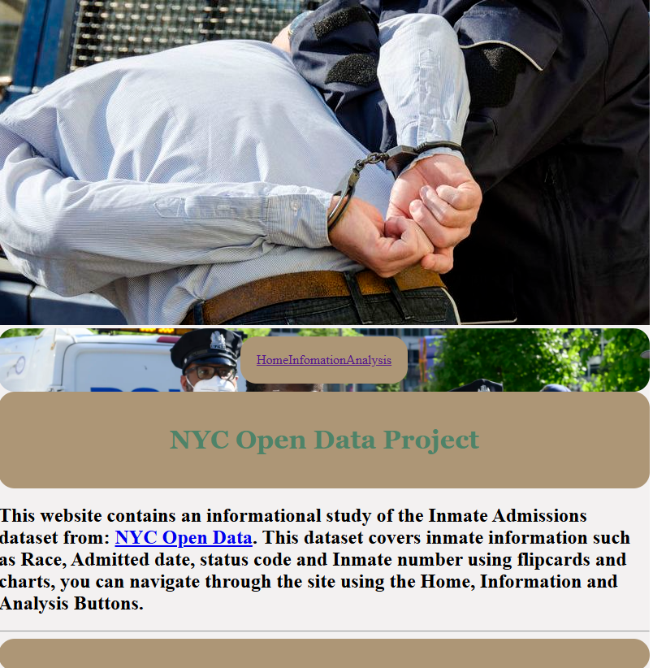
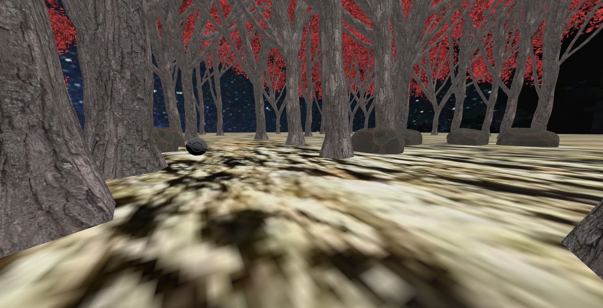

<!DOCTYPE html>
<html>

<head>
	<meta charset="utf-8">
	<meta name="viewport" content="width=device-width, initial-scale=1">
	<title>About me</title>
	<link rel="stylesheet" href="style.css">
</head>
</html>

<p style="font-family: monospace;"><a href="index.html"style="color: black">Back to Home Page</a></p>

<h2>Projects</h2>

<p></p>


<p> This project is an open data project. The project was about research that contains an informational study of the Inmate Admissions. The dataset covers inmate information such as Race, Admitted date, status code and Inmate number using flipcards and charts. </p>

<br>

<p>

<p> You will spawn with rocks and trees randomly generated with different locations, a ball will appear visible and there will be a hidden platform as well as rocks and trees changing positions when you change planes. When you shift planes depending on what's visible the ball will be visible or the platform will be. You will have to memorize where the ball is and where the platform is then navigate the ball through the obsticles and put it ontop of the platform.</p>

